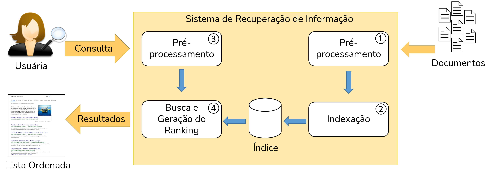
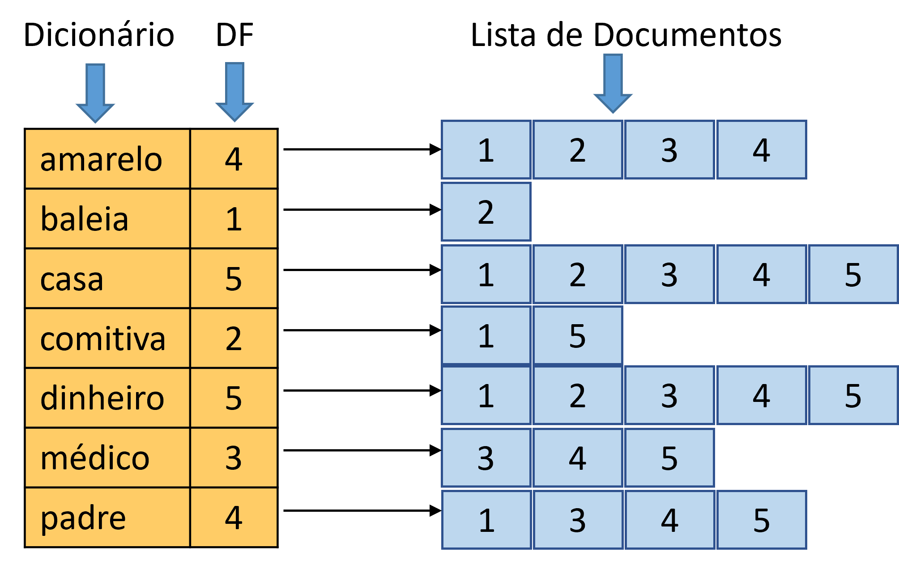
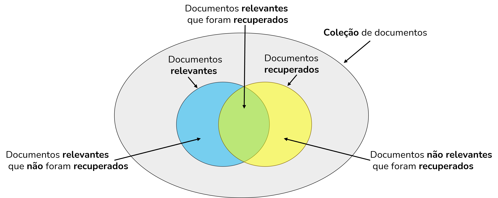
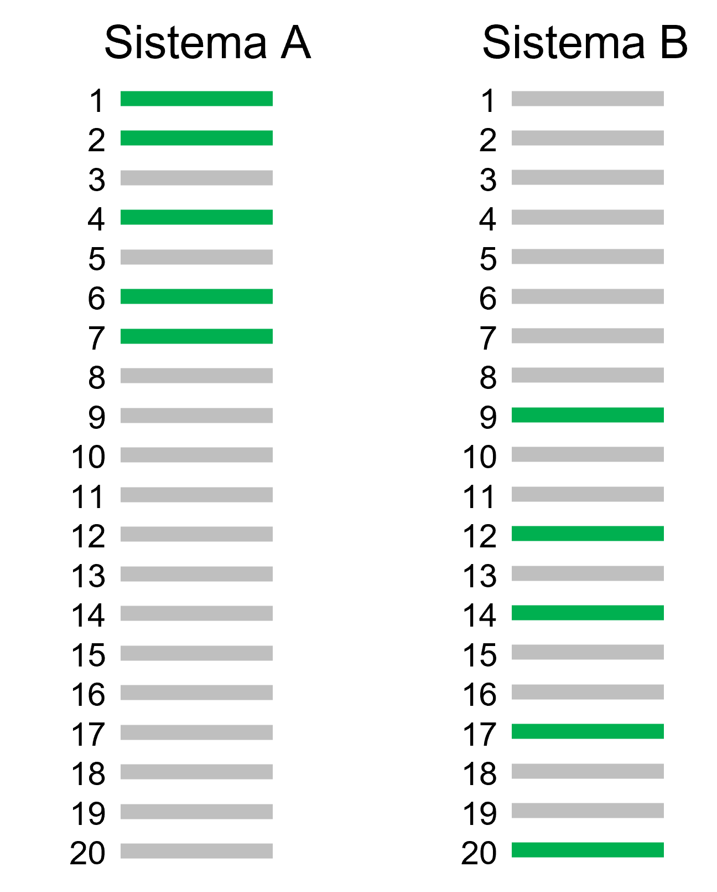
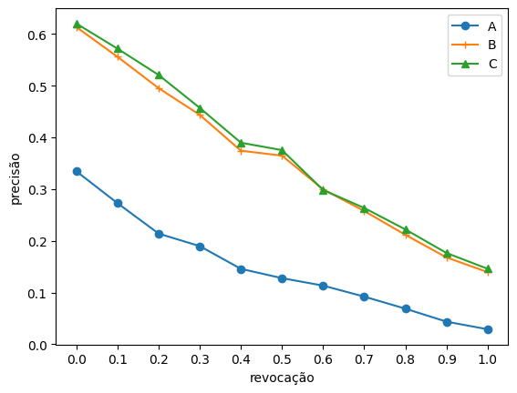

2 Recuperação de Informação
2.1 Introdução
A necessidade de organizar a informação é inerente à espécie humana – bibliotecas existem desde pelo menos o ano 2600 AC. Dado o grande volume de informação que as bibliotecas armazenam, a partir dos anos 1960, iniciaram-se esforços a fim de automatizar o armazenamento e a busca de materiais bibliográficos através da computação. Esses esforços marcaram o início da área de recuperação de informação (RI). A RI trata de encontrar, a partir de grandes coleções, material (geralmente documentos) de natureza não estruturada (geralmente texto) que satisfaça uma necessidade de informação (Manning et al., 2008). Em outras palavras, o objetivo central da RI é a busca, ou seja, a tarefa de encontrar material relevante a partir de uma consulta de um usuário. Esta tarefa é comumente conhecida por recuperação ad hoc. Apesar de a RI poder ser aplicada a diferentes tipos de dados não estruturados como imagem, áudio, vídeo etc. o foco deste capítulo é informações textuais.
2.1.1 Relação com o PLN
Há muita interseção entre RI e PLN, pois ambas lidam com a linguagem humana. Contudo, há algumas diferenças. A primeira diferença é quanto à origem – enquanto que o PLN teve origem na inteligência artificial e na linguística computacional, a RI teve origem na biblioteconomia e na ciência da informação1. Outra diferença é quanto ao escopo – podemos dizer que o escopo do PLN é mais abrangente (i.e., compreensão e geração de linguagem) enquanto que o da RI é mais restrito às tarefas relacionadas à busca por informação.
2.1.2 O Foco da Recuperação de Informação
A tarefa central da RI é casar a consulta de um usuário com os documentos que são potencialmente relevantes a ela. A principal dificuldade é que os termos utilizados pelo usuário podem não ter sido usados nos documentos relevantes. Este problema é conhecido como incompatibilidade de vocabulário (vocabulary mismatch) e é decorrente de dois fenômenos comuns na linguagem: a sinonímia e a polissemia. A sinonímia refere-se ao fato de usarmos palavras diferentes para nos referirmos ao mesmo conceito, e.g., “bergamota”, “tangerina” e “mexerica”. O problema para RI é que uma consulta pelo termo “bergamota” não consegue recuperar documentos relevantes que contenham “tangerina”. A polissemia refere-se ao fato de que uma mesma palavra pode apresentar sentidos distintos, e.g.,“manga” que tanto pode ser a fruta como a parte da vestimenta que cobre o braço da pessoa. O efeito negativo da polissemia para a RI é a recuperação de documentos que contêm a palavra pesquisada, mas não no sentido pretendido. Ao longo dos anos, houve uma vasta gama de propostas de solução para este problema. Uma visão geral dessas propostas é fornecida na Seção Modificação Automática de Consultas.
Até meados dos anos 1990, o interesse em RI estava restrito a bibliotecários, jornalistas e profissionais do direito (i.e., profissões que tinham bastante necessidade de buscar informações). Com a popularização da Internet e dos motores de busca para a web, a RI ganhou muita importância. Sistemas de RI fazem parte da vida diária de uma grande parte da população mundial. Há estimativas que o Google, o motor de busca mais utilizado, receba cerca de 100 mil consultas por segundo e tenha 4,3 bilhões de usuários2. Os desafios de se lidar com coleções contendo bilhões de documentos (i.e., páginas web) motivaram o desenvolvimento de novos algoritmos e técnicas, objetivando tanto eficiência (baixo custo computacional) quanto eficácia (qualidade do resultado).
Um sistema de RI também pode ser utilizado como um componente em tarefas de PLN como sistemas de perguntas e respostas e de detecção de plágio. A vantagem é que a RI consegue recuperar documentos candidatos com um custo computacional baixo. Assim, as fases subsequentes que requerem comparações exaustivas usando modelos mais custosos podem trabalhar com um conjunto menor de documentos.
2.1.3 O Conceito de Relevância
Vimos na Subseção O Foco da Recuperação de Informação que a tarefa central de RI é recuperar itens que sejam relevantes a uma necessidade de informação expressa por meio de palavras-chave. A relevância é um julgamento feito pelo usuário que indica o quão bem um documento satisfaz a consulta. Em sua forma mais simples, ela pode ser tratada como binária – cada documento é considerado como relevante ou como não relevante. Também é possível utilizar diversos níveis de relevância como por exemplo: “muito relevante”, “moderadamente relevante”, “marginalmente relevante” e “não relevante”.
É comum ouvirmos que um motor de busca ou sistema de RI retorna os resultados em ordem de relevância. Esta afirmação não está tecnicamente correta pois a relevância é subjetiva e só pode ser atribuída pelo usuário. Dois usuários podem fazer a mesma consulta \(q\) e julgar um mesmo documento \(d\) de forma diferente – enquanto um usuário considera que \(d\) é relevante, o outro usuário pode considerar que \(d\) não é relevante para \(q\). Os sistemas de RI ordenam os documentos utilizando uma função de ranqueamento baseada em evidências que o sistema consegue calcular (e.g., estatísticas de ocorrências das palavras nos documentos, tamanho dos documentos etc.). Idealmente, espera-se que esta função de ranqueamento esteja positivamente correlacionada com a ideia subjetiva de relevância dos usuários.
2.1.4 Principais Livros
A RI é uma área de pesquisa por si só e este capítulo não pretende ser uma revisão exaustiva. vamos focar nos aspectos centrais da área e na sua interseção com PLN. Há diversos livros em língua inglesa que são referência em RI. Para o leitor que deseja saber mais sobre a área, indicamos os seguintes livros:
- Introduction to Information Retrieval de Manning, Schütze e Raghavan (Manning et al., 2008), publicado em 2008 pela Cambridge University Press e disponível gratuitamente online3.
- Search engines: Information retrieval in practice de Croft, Metzler, e Strohman (Croft et al., 2010), publicado em 2010 pela Addison-Wesley e disponível gratuitamente online4.
- Modern Information Retrieval - the concepts and technology behind search de Baeza-Yates e Ribeiro-Neto (Baeza-Yates; Ribeiro-Neto, 2011), publicado em 2011 pela Addison-Wesley.
Em português, há uma versão resumida do livro Modern Information Retrieval publicada em 2013 (Baeza-Yates; Ribeiro-Neto, 2013). Esta versão contém os principais capítulos do livro original.
2.1.5 Organização deste Capítulo
Nesta primeira versão do livro Processamento de Linguagem Natural: Conceitos, Técnicas e Aplicações em Português, o capítulo sobre Recuperação da Informação tem como foco as operações de pré-processamento e indexação (Seção Visão Geral de um Sistema Típico de Recuperação de Informação), nos modelos clássicos (Seção Modelos Clássicos de recuperação de informação), no paradigma de avaliação (Seção Avaliação da Qualidade de Sistemas de recuperação de informação) e em técnicas de melhoria de qualidade (Seção Modificação Automática de Consultas). Também indicamos algumas bibliotecas e ferramentas amplamente utilizadas (Seção Ferramentas e Bibliotecas). As próximas versões do livro irão incluir tópicos avançados como o ranqueamento neural.
2.2 Visão Geral de um Sistema Típico de Recuperação de Informação
A Figura 2.1 mostra uma visão geral do processo de RI. Em uma ponta, há a usuária que tem uma necessidade de informação e, na outra ponta, temos uma coleção de documentos textuais. A consulta da usuária é submetida a um sistema de RI (representado pelo retângulo laranja). As Etapas 1 e 2 ocorrem offline, pois o índice precisa estrar pronto antes que o sistema possa receber consultas. Na Etapa 1, os documentos da coleção são pré-processados para então, na Etapa 2, serem indexados. Na Etapa 3, o sistema executa sobre a consulta as mesmas operações de pré-processamento que foram aplicadas na Etapa 1. O texto pré-processado da consulta é utilizado, na Etapa 4, para buscar no índice os documentos que mais bem atendam a consulta. Os resultados da consulta são então retornados à usuária sob a forma de uma lista ordenada.

2.2.1 Pré-Processamento
As operações de pré-processamento são muito semelhantes às estudadas para as tarefas de PLN relatadas no Capítulo Sequência de caracteres e palavras. É preciso definir a nossa unidade de indexação, ou seja, o que é um documento no contexto tratado. Por exemplo, uma notícia, um comentário, um e-mail, um artigo científico, um livro, um capítulo do livro etc.
2.2.1.1 Tokenização
Dada uma sequência de caracteres e uma unidade de indexação, a tokenização irá separar a sequência em tokens (i.e., unigramas de palavras). Nesse processo, é comum descartarmos caracteres de pontuação e mantermos apenas as palavras (i.e., também chamadas de termos). Embora à primeira vista este processo pareça bastante trivial (i.e., podemos apenas considerar que os caracteres não alfabéticos como símbolos e sinais de pontuação sejam separadores), há vários casos especiais que podemos precisar tratar. Por exemplo, endereços de email, emojis, e termos que misturam letras e símbolos como C++.
O processo de tokenização costuma ser implementado utilizando-se expressões regulares e há vários tokenizadores prontos em bibliotecas como NLTK5 e spaCy6. Após a tokenização, é comum converter todos os caracteres para letra minúscula. O objetivo é fazer com que a busca não seja case-sensitive, isto é, impactada por texto em letras maiúscula e minúscula. Por outro lado, essa operação dificulta a identificação de entidades nomeadas, uma vez que entidades são geralmente nomes próprios com grafia em letra maiúscula.
A remoção de acentos, cuja denominação mais apropriada é remoção de sinais diacríticos também pode ser realizada, principalmente quando se trata de textos informais nos quais esses sinais são menos utilizados. Um sinal diacrítico é uma marca que colocamos sobre ou sob o caractere como acento agudo, grave, circunflexo, til ou cedilha.
2.2.1.2 Remoção de Stop Words
As stop words são palavras que têm pouca utilidade para a RI pois ocorrem em muitos documentos e assim não servem para distinguir o conteúdo semântico dos documentos. Preposições, conjunções, artigos e verbos de ligação são normalmente consideradas como stop words. Essas palavras são muitas vezes completamente descartadas em um processo conhecido como remoção de stop words.
O processo de remoção de stop words é bastante simples e consiste em verificar a presença de cada palavra do texto em uma lista de stop words previamente construída. Existem listas prontas que podemos usar, como a do NLTK, por exemplo, que contém 204 palavras. Contudo, é recomendável revisar se as listas contêm palavras que podem ser úteis para o contexto da aplicação sendo desenvolvida. Por exemplo, na lista elaborada pela Linguateca7 com as palavras mais frequentes dos textos da Folha de São Paulo, encontramos a palavra “brasil”. Esta palavra, muito provavelmente, não deve ser removida dos textos da coleção de documentos.
O principal argumento a favor da remoção de stop words é a redução do tamanho do vocabulário pois elas representam cerca de 40% das ocorrências de palavras em um corpus. Por outro lado, essa remoção pode trazer uma perda de informação relevante. Se pensarmos na famosa expressão “ser ou não ser, eis a questão”, com a remoção de stop words, sobraria apenas “questão”, o que descaracteriza completamente a expressão. O impacto negativo na busca seria que o sistema não mais conseguiria distinguir entre documentos que contenham a expressão completa daqueles que contêm apenas a palavra “questão”.
2.2.1.3 Stemming
O objetivo do stemming é gerar uma mesma representação para formas variantes de uma mesma palavra através da remoção dos sufixos. Por exemplo, removendo-se os sufixos de “apresentação”, “apresentando”, e “apresentar”, obteríamos o radical “apresent”. Com isso, uma usuária buscando por “apresentar artigos científico” consegue recuperar um documento com o trecho “apresentando artigos científicos”. O benefício é aumentar o número de documentos relevantes recuperados em resposta à consulta.
O processo de stemming e seu impacto sobre RI vêm sendo estudado há diversos anos. Para a língua inglesa, o primeiro algoritmo de stemming, ou stemmer, data de 1968 e foi proposto por Julie Beth Lovins (Lovins, 1968). Em 1980, Martin Porter propôs o Porter Stemmer (Porter, 1980) que mostrou obter bons resultados (também para a língua inglesa) e posteriormente foi traduzido para outros idiomas incluindo o português8.
O primeiro stemmer desenvolvido especialmente para a língua portuguesa foi o Removedor de Sufixos da Língua Portuguesa (RSLP)9 (Orengo; Huyck, 2001). Posteriormente veio o STEMBR (Alvares et al., 2005). Há resultados experimentais que mostram a validade da aplicação de stemmers para RI em português (Flores et al., 2010; Orengo et al., 2006). Muitas vezes, na média de um conjunto de consultas, o impacto do stemming pode ser pequeno. Contudo, ao analisarmos consultas individuais, percebemos melhorias muito grandes em alguns casos. Em outros, podem aparecer mais documentos não relevantes recuperados pois a remoção do sufixo pode gerar ambiguidade. Os resultados mostram que stemmers menos agressivos, ou seja, com menos regras de remoção tendem a gerar resultados melhores pois têm menos impacto negativo na precisão.
O Quadro 2.1 mostra um trecho do livro O Tempo e o Vento – O Continente, de Érico Veríssimo, e suas versões após cada etapa do pré-processamento. Observemos a redução de 51 para 27 tokens com a remoção de stop words. O stemmer utilizado no exemplo foi o Snowball10. Também vale ressaltar a potencial introdução de ambiguidade com a redução de algumas palavras, por exemplo de “legalistas” para “legal”.
Quadro 2.1 Excerto do livro O Tempo e o Vento – O Continente, de Érico Veríssimo, e suas versões após cada etapa do pré-processamento.
2.2.2 Indexação
A forma que temos para evitar ter de “varrer” os textos da coleção de documentos em busca dos termos da consulta (o que seria um procedimento extremamente lento) é contarmos com um índice previamente construído. A indexação recebe como entrada o texto pré-processado e cria um índice chamado de arquivo invertido. Um arquivo invertido assemelha-se ao índice remissivo que comumente encontramos ao final de um livro e contém as palavras (únicas) do texto e a lista de documentos em que elas aparecem.
A Figura 2.2 mostra um exemplo de índice que pode ser usado por um sistema de RI. O índice tem dois componentes: (i) o dicionário, também é chamado de vocabulário, que possui a lista de termos únicos da coleção de documentos e (ii) a lista de identificadores de documentos em que o termo aparece (conhecida por lista de postings). Junto ao dicionário, também armazena-se o número de documentos em que o termo aparece, conhecido como document frequency (\(DF\)). Observemos que o dicionário fica em ordem alfabética e a lista de postings fica em ordem de identificador de documento.

Nos casos em que desejamos fazer uma busca sobre um campo específico do documento (e.g., título ou autor), vamos precisar de índices paramétricos, um para cada campo. Além disso, se quisermos permitir buscas por múltiplos termos adjacentes (e.g., “memória prodigiosa”), precisaremos de um índice posicional que guarde também as posições em que os termos aparecem nos documentos. Certamente, tanto os índices paramétricos como os posicionais possuem um custo maior em termos de espaço de armazenamento e de processamento.
2.3 Modelos Clássicos de recuperação de informação
Um modelo de RI especifica como representar os documentos, as consultas e como compará-los. Ao longo dos anos, diversos modelos de RI foram propostos. Vamos explorar os modelos clássicos. Todos os modelos clássicos pressupõem que a distribuição dos termos nos documentos é independente e utilizam a abordagem bag of words (BoW). Em um BoW, a ordem dos termos nos documentos é desprezada. A vantagem é a simplificação dos modelos, os quais conseguem processar consultas de maneira mais rápida. A desvantagem é a perda de semântica em alguns casos pois as sentenças “João é mais velho do que José” e “José é mais velho do que João” têm representações idênticas apesar de significado oposto.
2.3.1 Modelo Booleano
O primeiro modelo que foi usado para RI foi o modelo Booleano. Trata-se de um modelo simples, baseado na teoria dos conjuntos e na álgebra booleana. As consultas são compostas por palavras-chave combinadas com os operadores AND, OR e NOT e o seu processamento utiliza o índice.
Para processar uma consulta do tipo \(p_1\) AND \(p_2\), precisamos selecionar as listas de postings de \(p_1\) e \(p_2\) e computar a sua interseção. Por exemplo, com o trecho de índice da Figura 2.2, podemos ver que a consulta “comitiva” AND “médico” retornaria apenas o documento 5. Já a consulta “baleia” AND “padre” não retornaria nenhum documento.
Consultas com OR implicam na união de conjuntos. Por exemplo, considerando o índice da Figura 2.2, a consulta “comitiva” OR “médico” retornaria os documentos 1, 3, 4 e 5.
A principal limitação do modelo Booleano é que ele não é capaz de ordenar o resultado da consulta. Ou um documento satisfaz ou não satisfaz a expressão Booleana da consulta; não há a opção “satisfaz parcialmente”. Apesar dessa limitação, este foi o modelo comercial mais usado por três décadas, mesmo após a proposta de modelos superiores. Até hoje ainda vemos o modelo Booleano sendo usado, por exemplo, em alguns sistemas de bibliotecas.
2.3.2 Modelo Vetorial
Com o objetivo de poder ordenar os documentos em resposta às consultas, há duas premissas simples que podemos utilizar: (i) documentos que contém mais vezes os termos da consulta têm mais chance de estarem relacionados a ela (e de serem relevantes) e (ii) os termos mais raros na coleção são mais úteis para diferenciar o conteúdo dos documentos. A primeira premissa é atribuída ao pesquisador alemão Hans Peter Luhn e data de 1957. E a segunda premissa foi desenvolvida pela pesquisadora inglesa Karen Spärck Jones em 1972.
Com base nessas premissas, Gerard Salton propôs, na década de 1960, o modelo vetorial (em inglês, vector space model) (Salton; McGill, 1983). Nesse modelo, os documentos e as consultas são representados como vetores em um espaço de \(t\) dimensões, onde \(t\) é o número de termos distintos (i.e., o tamanho do dicionário). No espaço vetorial, os termos são os eixos. As consultas e os documentos são representados no espaço de acordo com a força da associação que eles têm com o termo. A força da associação do documento \(d_j\) com o termo \(i\) (\(w_{i,d_j}\)) é computada pelo esquema TF-IDF (Term Frequency times Inverse Document Frequency), segundo a Equação 2.1:
\[ w_{i,d_j} = TF_{i,d_j} \times IDF_t = freq_{i,d_j} \times log_{10}\frac{N}{DF_i} \tag{2.1}\]
onde \(freq_{i,d_j}\) é o número de ocorrências do termo \(i\) no documento \(d_j\), \(N\) é o número de documentos da coleção e \(DF_i\) é o número de documentos que contêm o termo \(i\). É comum normalizar o componente \(TF\) para evitar que documentos longos sejam beneficiados, pois um documento longo tem mais chances de possuir os termos da consulta. A normalização do componente \(TF\) pode ser feita de diferentes formas: (i) dividindo-se o número de ocorrências do termo no documento pelo número de palavras no documento ou (ii) dividindo-se o número de ocorrências do termo no documento pelo número de ocorrências do termo mais comum naquele documento.
O componente \(IDF\) tem por objetivo dar um peso maior para os termos raros pois eles são mais úteis para discriminar o conteúdo dos documentos. Pensando em uma situação extrema, um termo que ocorra em todos os documentos não tem nenhuma utilidade para diferenciar um documento de outro. Sendo assim, valores de \(IDF\) mais altos serão atribuídos para termos que ocorram em poucos documentos. Note-se que o \(IDF\) não tem efeito caso a consulta tenha apenas um termo. Em consultas com dois ou mais termos, o efeito do \(IDF\) é dar mais importância para os termos que ocorrem em menos documentos. Por exemplo, imaginemos uma coleção que trata de instrumentos musicais. Um usuário faz a consulta “flauta bansuri”. Considerando que o termo “flauta” é muito mais comum do que o termo “bansuri” (que se refere a um tipo específico de flauta transversal), o efeito do \(IDF\) será atribuir bem mais importância ao termo “bansuri”. Os vetores gerados pelo TF-IDF são longos e esparsos. Longos pois o número de dimensões é igual ao número de palavras do vocabulário (o que pode chegar a centenas de milhares para algumas coleções). Esparsos pois a grande maioria dos elementos têm valor zero já que os documentos possuem uma pequena fração dos termos do vocabulário.
A similaridade entre um documento e uma consulta é dada pelo cosseno entre os seus vetores. O cosseno entre uma consulta \(q\) e um documento \(d_j\) é o produto escalar normalizado dos vetores \(\vec{q}\) e \(\vec{d_j}\), dado pela Equação 2.2:
\[ cosseno(q,d_j) = \frac{\vec{q} \cdot \vec{d_j}}{|\vec{q}| \times |\vec{d_j}|} = \frac{\sum_{i=1}^t w_{i,q} \times w_{i,d_j}}{\sqrt{{\sum_{i=1}^t w_{i,q}}^2} \times \sqrt{{\sum_{i=1}^t w_{i,d_j}}^2}} \tag{2.2}\]
onde \(w_{i,q}\) e \(w_{i,d_j}\) representam o peso do \(i\)-ésimo termo na consulta \(q\) e no documento \(d_j\), respectivamente.
O cosseno é máximo (i.e., igual a 1) se os vetores possuem um ângulo de 0 graus e é mínimo (i.e., igual a 0) se os vetores formarem um ângulo de 90 graus11. Em outras palavras, o cosseno será mínimo se o documento e a consulta não compartilharem nenhum termo. Vale ressaltar que não é preciso computar o cosseno entre a consulta e todos os documentos. Utilizando um índice (como o da Figura 2.2), podemos selecionar apenas os documentos que têm pelo menos uma das palavras da consulta, e calcular o cosseno somente entre a consulta e esses documentos. Também é possível estender essa noção e selecionar apenas documentos com valores de TF-IDF que ultrapassem um limiar para os termos da consulta ou restringir ainda mais e calcular o cosseno apenas para documentos que possuam duas ou mais das palavras da consulta.
Exemplo 2.1 Para ilustrar o conceito de TF-IDF e o ranqueamento dos documentos no modelo vetorial através do cosseno, vamos trabalhar com um exemplo. Nossa coleção de documentos é composta por cinco importantes livros da literatura brasileira. São eles:
- \(d_1\) – O Alienista de Machado de Assis;
- \(d_2\) – Vidas Secas de Graciliano Ramos;
- \(d_3\) – O Continente (de O Tempo e o Vento) de Érico Veríssimo;
- \(d_4\) – Capitães de Areia de Jorge Amado; e
- \(d_5\) – Os Sertões de Euclides da Cunha.
Essa pequena coleção possui 350.260 tokens, e um vocabulário de 32.594 termos (já desconsiderando-se as stop words) – isso quer dizer que os documentos e as consultas são representados por vetores de 32.594 dimensões. Como seria inviável mostrarmos todos esses termos, iremos focar em sete termos selecionados: amarelo, baleia, casa, comitiva, dinheiro, médico e padre. A Tabela 2.1 mostra os sete termos selecionados juntamente com o número de documentos em que cada um deles aparece (DF). A partir do DF, podemos computar o IDF (segundo elemento da Equação 2.1). Por exemplo, o termo “comitiva” ocorre em dois documentos, então \(IDF_{comitiva} = log_{10} \frac{5}{2} = 0,3979\). Já para o termo “casa” que ocorre em todos os cinco documentos, o \(IDF_{casa} = log_{10} \frac{5}{5} = 0\).
| Termo | DF | IDF |
|---|---|---|
| amarelo | 4 | 0,0969 |
| baleia | 1 | 0,6990 |
| casa | 5 | 0,0000 |
| comitiva | 2 | 0,3979 |
| dinheiro | 5 | 0,0000 |
| médico | 4 | 0,0969 |
| padre | 4 | 0,0969 |
| Termo | \(d_1\) O Alienista |
\(d_2\) Vidas Secas |
\(d_3\) O Tempo e O Vento |
\(d_4\) Capitães de areia |
\(d_5\) Os Sertões |
|---|---|---|---|---|---|
| amarelo | 1 | 42 | 6 | 3 | 0 |
| baleia | 0 | 86 | 0 | 0 | 0 |
| casa | 109 | 37 | 247 | 120 | 30 |
| comitiva | 4 | 0 | 0 | 0 | 4 |
| dinheiro | 7 | 9 | 33 | 43 | 3 |
| médico | 18 | 0 | 157 | 7 | 8 |
| padre | 22 | 0 | 120 | 252 | 9 |
| Termo | \(d_1\) O Alienista |
\(d_2\) Vidas Secas |
\(d_3\) O Tempo e O Vento |
\(d_4\) Capitães de areia |
\(d_5\) Os Sertões |
|---|---|---|---|---|---|
| amarelo | 0,0009 | 0,0473 | 0,0024 | 0,0012 | 0,0000 |
| baleia | 0,0000 | 0,6990 | 0,0000 | 0,0000 | 0,0000 |
| casa | 0,0000 | 0,0000 | 0,0000 | 0,0000 | 0,0000 |
| comitiva | 0,0146 | 0,0000 | 0,0000 | 0,0000 | 0,0549 |
| dinheiro | 0,0000 | 0,0000 | 0,0000 | 0,0000 | 0,0000 |
| médico | 0,0160 | 0,0000 | 0,0616 | 0,0031 | 0,0258 |
| padre | 0,0196 | 0,0000 | 0,0471 | 0,0969 | 0,0291 |
Para computar os vetores de pesos TF-IDF para os cinco documentos da coleção, vamos iniciar com uma matriz de incidência dos termos nos documentos. Temos sete termos e cinco documentos; então, nossa matriz terá sete linhas e cinco colunas. Nessa matriz, ilustrada na Tabela 2.2, temos o número de ocorrências dos termos nos documentos. A seguir, vamos normalizar o componente TF dividindo-o pelo número de ocorrências do termo mais comum (i.e., o termo que mais ocorre no documento), que para \(d_1\) é “casa”. Com isso, valor de TF-IDF para o termo “padre” no documento \(d_1\) é \((22/109) \times 0,0969 = 0,0196\). Esses valores estão na Tabela 2.3. Note-se que os escores para os termos “casa” e “dinheiro” são iguais a zero pois eles aparecem em todos os cinco documentos, resultando em um IDF = 0. Também podemos observar que o maior escore é o do termo “baleia” no documento \(d_2\). Isso ocorre porque esse termo ocorre muitas vezes em \(d_2\) e nenhuma vez nos outros quatro documentos – ele é, portanto, um termo que tem bastante poder de diferenciar esse documento dos demais.
Para exemplificar o cálculo do cosseno, vamos imaginar uma consulta \(q\) = {comitiva, médico}. Assim como os documentos, o vetor da consulta terá sete dimensões e será composto por pesos TF-IDF. Os termos que não aparecem na consulta têm peso zero. Assim, o vetor da consulta será \(\vec{q}=[0; 0; 0; 0,3979; 0; 0,0961; 0]\). Para montar o ranking dos documentos em relação à consulta, calculamos o cosseno entre \(\vec{q}\) e os vetores dos documentos que estão na Tabela 2.3 utilizando a Equação 2.2. Por exemplo, o cosseno entre \(\vec{q}\) e \(\vec{d_1}\) é:
\[ \frac{0 \times 0,009 + 0 \times 0 + 0 \times 0 +0,3979 \times 0,0146 + 0 \times 0 + 0,0969 \times 0,0160 + 0 \times 0,0196}{\sqrt{0^2+0^2+0^2+0,3979^2+0^2+0,0969^2+0^2} \times \sqrt{0,0009^2+0^2+0^2+0,0146^2+0^2+0,0160^2+0,0196^2}} = \]
\[ \frac{0 + 0 + 0 + 0,0058 + 0 + 0,0016 + 0 }{\sqrt{0+0+0+0,1583+0+0,0009+0} \times \sqrt{0+0+0+0,0002+0+0,0003+0,0004}} = \]
\[ \frac{0,0074}{\sqrt{0,1677} \times{\sqrt{0,0009}}} = \frac{0,0074}{0,4096 \times {0,0292}} = \frac{0,0074}{0,012} = 0,6156 \]
Os escores de cosseno entre \(\vec{q}\) e os cinco documentos estão na Tabela 2.4. Note que como \(q\) e \(d_2\) não têm nenhum termo em comum, o escore desse documento é zero. Para montar o ranking, ordenamos os documentos em ordem decrescente de cosseno. Dessa forma, o primeiro do ranking seria \(d_5\), seguido por \(d_1\), \(d_3\) e \(d_4\).
| \(d_1\) | \(d_2\) | \(d_3\) | \(d_4\) | \(d_5\) |
|---|---|---|---|---|
| 0.6156 | 0.0000 | 0.1879 | 0.0075 | 0.8765 |
2.3.3 Modelos Probabilísticos
Há diversos modelos que utilizam abordagens para RI baseadas em um arcabouço probabilístico. A principal motivação é que a teoria das probabilidades fornece uma base sólida para representar e manipular a incerteza que é inerente ao processo de casamento entre consultas e documentos.
A ideia original foi proposta por Rijsbergen (1979) e intitulada Probability Ranking Principle. A ideia é ranquear os documentos da coleção em ordem decrescente de probabilidade de relevância para a consulta. Se tivéssemos uma amostra de documentos sabidamente relevantes ou não relevantes, seria possível estimar a probabilidade de um termo aparecer em um documento relevante. Essa informação poderia então ser usada para ranquear os documentos. As probabilidades são estimadas com a maior precisão possível com base em estatísticas que conseguimos calcular. O primeiro modelo probabilístico foi proposto por Robertson; Spärck Jones (1976) – o Binary Independence Model (BIM). O BIM é um modelo binário, ou seja, ele considera apenas se o termo está ou não presente no documento. Outra simplificação é a utilização do princípio da independência, que supõe que os termos ocorrem nos documentos de maneira independente. Esse é um modelo simples que não incorpora algumas características, como a frequência dos termos nos documentos e a importância dos termos na coleção (vistas na Subseção Modelo Vetorial), que contribuem para a geração de resultados melhores para as consultas (i.e., uma melhor ordenação dos documentos).
O modelo probabilístico mais influente até os dias de hoje é o Okapi BM25 que foi projetado entre os anos 1980 e 1990 por Spärck Jones et al. (2000). O Okapi era um sistema de busca para o catálogo da biblioteca da City University de Londres. O modelo BM25 (BM é a abreviatura de best match) foi resultado de uma série de experimentos com variações de fórmulas de modelos probabilísticos. Os pesquisadores usaram identificadores para as variações da fórmulas e a que obteve melhores resultados foi a BM25, que é dada conforme a Equação 2.3 a seguir:
\[\begin{aligned} BM25(q,d_j) = \sum_{i \in q} log \frac{(r_i + 0,5)/(R - r_i + 0,5)}{(df_i - r_i + 0,5)/(N - df_i + r_i + 0,5)} \times \\ \frac{(k_1 + 1)tf_i}{K + tf_i} \times \frac{(k_2 + 1)qf_i}{k_2 + qf_i} \end{aligned} \tag{2.3}\]
onde \(R\) é o número de documentos sabidamente relevantes para a consulta \(q\); \(r_i\) é o número de documentos sabidamente relevantes que contêm o termo \(i\); \(N\) é o número de documentos da coleção; \(df_i\) é o número de documentos que contêm o termo \(i\); \(tf_i\) é o número de ocorrências do termo \(i\) no documento \(j\); \(qf_i\) é o número de ocorrências do termo \(i\) na consulta \(q\); \(K\), \(k_1\) e \(k_2\) são parâmetros que precisam ser definidos empiricamente. A adição de 0,5 em cada termo da equação é para evitar a divisão por zero. Note que o somatório é efetuado para todos os termos da consulta.
O parâmetro \(k_1\) controla a escala da frequência dos termos (\(tf\)) nos documentos. Usar \(k_1\) = 0 faz com que o modelo se comporte como um modelo binário. Por outro lado, altos valores de \(k_1\) correspondem ao uso do TF sem normalização. Na prática, é comum usarmos \(k_1\) = 1,2. De forma similar, o parâmetro \(k_2\) controla a escala da frequência dos termos na consulta (\(qf\)). Os valores recomendados para \(k_2\) são entre 0 e 1000.
Por fim, o parâmetro \(K\) é calculado por:
\[K = k_1 ((1-b) + b \times \frac{dl}{avdl})\]
onde \(dl\) é o tamanho do documento, \(avdl\) é o tamanho médio dos documentos da coleção e \(b\) controla a normalização em função do tamanho do documento. Se \(b = 0\), então a normalização não é realizada. Já \(b = 1\) normaliza os pesos em função do tamanho dos documentos. O valor recomendado para \(b\) é 0,75.
É importante ressaltar que os escores gerados pelos modelos probabilísticos não são probabilidades, i.e., não estão no intervalo [0,1]. Isso não representa um problema pois a utilidade do escore é apenas ordenar os documentos, sem a necessidade de permitir uma interpretação probabilística.
Como na imensa maioria dos casos práticos nós não temos conhecimento de uma amostra de documentos relevantes, o BM25 também pode ser computado sem a informação de relevância. Em outras palavras, \(R\) e \(r_i\) são zero. Com isso, a Equação 2.3 pode ser simplificada para:
\[ BM25(q,d_j) = \sum_{i \in q} log \frac{N - df_i + 0,5}{df_i + 0,5} \times \frac{(k_1 + 1)tf_i}{K + tf_i} \times \frac{(k_2 + 1)qf_i}{k_2 + qf_i} \tag{2.4}\]
Exemplo 2.2 Para ilustrar o cálculo do BM25, vamos utilizar a mesma consulta da Subseção Modelo Vetorial \(q\) = {comitiva, médico} e faremos o cálculo do escore passo a passo para o \(d_1\). Não temos informação prévia de relevância, então vamos usar a Equação 2.4. Cada termo ocorre apenas uma vez na consulta, então \(qf_1\) = 1 e \(qf_2\) = 1. O escore final é formado pela soma dos escores das palavras da consulta que aparecem no documento \(d_1\). Para facilitar o entendimento, os cálculos referentes ao termo “comitiva” estão em laranja e os os cálculos referentes ao termo “médico” estão em azul. As estatísticas da coleção estão nas Tabelas 2.1, 2.2, 2.3. Os parâmetros utilizados foram \(k_1\) = 1,2, \(k_2\) = 100 e \(b=0,75\). O tamanho médio dos documentos da coleção (\(avdl\)) é de 276 e o tamanho de \(d1\) é 161. Com isso, \(K= 1,2 ((1 - 0,75) + 0,75 \times 161/279) = 0,825\). Observe que o escore final para o documento é negativo, mas o valor absoluto não é importante pois estamos interessados apenas em ranquear os documentos. Calculando o escore para os outros quatro documentos, verificamos que o primeiro documento do ranking seria \(d_5\), seguido por \(d_1\), \(d_4\) e \(d_3\). Note-se que o ordenamento fica quase igual ao gerado pelo modelo vetorial – apenas os documentos \(d_4\) e \(d_3\) invertem as posições.
\[\begin{aligned} BM25(q,d_1) = {\color{orange}log\frac{5 - 2 + 0,5}{2 + 0,5} \times \frac{(1,2 + 1)4}{0,825 + 4} \times \frac{(100 + 1)1}{100 + 1}} + \\ {\color{blue}log\frac{5 - 4 + 0,5}{4 + 0,5} \times \frac{(1,2 + 1)18}{0,825 + 18} \times \frac{(100 + 1)1}{100 + 1}} = \\ \\ {\color{orange}log \frac{3,5}{2,5} \times \frac{8,8}{4,825} \times \frac{101}{101}} + {\color{blue}log \frac{1,5}{4,5} \times \frac{39,6}{18,825} \times \frac{101}{101}} = \\ {\color{orange}log 1,4 \times 1,824 \times 1} + \color{blue}{log 0,33 \times 2,1 \times 1} = \\ {\color{orange}0,33 \times 1,824} + {\color{blue}-1,10866 \times 2,1} = \\ {\color{orange}0,6137} {\color{blue}-2,311} = -1,6973 \end{aligned}\]
2.4 Avaliação da Qualidade de Sistemas de recuperação de informação
A RI é uma disciplina altamente empírica e a história da avaliação em sistemas de RI nasceu junto com a área. Os primeiros trabalhos sobre avaliação em RI foram coordenados por Cyril W. Cleverdon na escola de aeronáutica de Cranfield (Inglaterra) nos anos 1960. Por esta razão, o modelo de avaliação até hoje é conhecido como paradigma Cranfield. A avaliação consiste no cálculo de uma série de métricas que são calculadas com base em uma coleção de teste. Nesta seção abordaremos as principais métricas (Subseção Métricas) e as coleções de teste para português (Subseção Coleções de Teste). O leitor que deseja se aprofundar no processo de avaliação de RI pode referir-se a Sanderson et al. (2010).
2.4.1 Métricas
As métricas são baseadas na noção de relevância, i.e., uma avaliação que diz se um documento \(d_j\) é relevante a uma consulta \(q\). Inicialmente, vamos tratar a relevância como binária, ou seja, o ground truth julga o documento como relevante (1) ou não relevante (0). Todas as métricas vistas aqui variam no intervalo [0,1], sendo que 1 representa a recuperação ideal.
2.4.1.1 Métricas Baseadas em Conjuntos
A Figura 2.3 mostra um exemplo do que ocorre tipicamente quando fazemos uma consulta. A coleção de documentos está representada pelo oval cinza. O círculo amarelo representa os documentos que foram recuperados em resposta à consulta, enquanto que os documentos que de fato são relevantes para a consulta estão representados pelo círculo azul. Podemos ver que há documentos relevantes que foram recuperados (i.e., os documentos que estão na intersecção entre os conjuntos, que aparece representada na cor verde), mas há também documentos relevantes que deixaram de ser recuperados e documentos não relevantes que foram recuperados. Com base nesses conjuntos, podemos definir duas métricas básicas para avaliar a qualidade da recuperação: precisão e revocação (em inglês, recall).
Precisão (\(P\)) mede a proporção dos documentos recuperados que de fato é relevante. \[P = \frac{\#~relevantes~recuperados}{\#~recuperados}\]
Revocação (\(R\)) mede a proporção dos documentos relevantes que de fato foram recuperados. \[R = \frac{\#~relevantes~recuperados}{\#~relevantes}\]

Por exemplo, vamos imaginar uma situação em que um sistema recupera 100 documentos em resposta a uma consulta para a qual existam 30 documentos relevantes. Sabendo-se que entre os recuperados há 15 documentos relevantes, os valores das métricas de avaliação seriam \(P = \frac{15}{100} = 15\%\) e \(R = \frac{15}{30} = 50\%\). Imaginemos, então, uma segunda situação em que, na tentativa de aumentar a precisão, reduzimos o número de documentos recuperados para apenas 5 e todos eles sejam relevantes. Como resultado, nossa precisão aumentaria para \(P = \frac{5}{5} = 100\%\). O problema é que, com isso, a nossa revocação cairia para \(\frac{5}{30} = 16,67\%\). Indo na direção oposta, poderíamos tentar aumentar a revocação e recuperar mil documentos em vez de 100. Com isso, haveria uma chance bem maior de recuperarmos documentos relevantes, mas por outro lado, a precisão seria reduzida. Em resumo: altos níveis de revocação costumam ser acompanhados por baixos níveis de precisão e vice-versa. Por esta razão, é comum utilizarmos uma medida que agregue \(P\) e \(R\), a conhecida medida F, definida a seguir.
\[F = \frac{(\beta^2 + 1) \times P \times R}{(\beta^2 \times P) + R}\]
onde \(\beta\) é um parâmetro que permite definirmos a ênfase dada às métricas. Valores de \(\beta\) maiores do que 1 enfatizam a revocação enquanto que valores de \(\beta\) menores do que 1 enfatizam a precisão. Se quisermos atribuir a mesma ênfase às duas métricas, usamos \(\beta = 1\). Nesse caso, a métrica é comumente chamada de \(F1\) e sua fórmula é simplificada para \(F1 = \frac{2 \times P \times R}{P + R}\). Considerando o nosso primeiro exemplo, em que \(P = 0,15\) e \(R = 0,50\), a \(F1\) seria \(F1 = \frac{2 \times 0,15 \times 0,50}{0,15 + 0,50} = 0,23\).
2.4.1.2 Métricas para Rankings

Os sistemas de RI retornam os documentos em um ranking. A Figura 2.4 mostra exemplos de rankings de documentos recuperados em resposta a uma mesma consulta por dois sistemas diferentes (Sistemas A e B). São 20 documentos recuperados e, dentre eles, há 5 relevantes (representados em verde). Vamos supor que existam 7 documentos relevantes para essa consulta. As métricas vistas na Subseção Métricas Baseadas em Conjuntos resultariam em \(P = \frac{5}{20} = 25\%\), \(R = \frac{5}{7} = 71\%\) e \(F1 = \frac{2 \times 0,25 \times 0,71}{0,25 + 0,71} = 0,37\) tanto para o Sistema A quanto para o Sistema B. Esse resultado não é o ideal pois podemos ver que o Sistema A recuperou os documentos relevantes mais perto do topo do ranking e por isso deveria receber um escore mais alto do que o Sistema B. Esse problema ocorre porque precisão, revocação e medida-F são baseadas em conjuntos – e conjuntos, por definição, não têm ordenação. Então concluímos que precisão, revocação e F1 não são adequadas para avaliar rankings. Uma boa métrica para avaliar resultados ranqueados deve conseguir calcular quantos documentos relevantes foram recuperados e o quão próximos estão do topo do ranking. Com isso em mente, a métrica precisão média (do inglês, average precision, AP) foi proposta.
\[AP = \frac{\sum_{k=1}^n P(k) \times rel(k)}{\#~relevantes}\]
onde \(rel(k)\) é uma função de relevância binária que resulta em 1 caso o documento na \(k\)-ésima posição do ranking seja relevante. Os documentos relevantes que são foram recuperados serão penalizados com \(P=0\). Em outras palavras, percorreremos o ranking calculando, para cada documento relevante recuperado, a precisão naquele ponto. Para o Sistema A da Figura 2.4, temos a seguinte \(AP = \frac{1/1~+~2/2~+~3/4~+~4/5~+~5/7}{7} = 0,61\). E para o Sistema B temos \(AP = \frac{1/9~+~2/12~+~3/14~+~4/17~+~5/20}{7} = 0,14\). Concluímos, então, que a \(AP\) consegue capturar a fato do Sistema A ter sido superior ao B.
Quando temos um conjunto de consultas, calculamos a média das precisões médias (do inglês, mean average precision, MAP), que é simplesmente a média das APs para \(|Q|\) consultas.
\[MAP = \frac{\sum_{q=1}^{|Q|} AP_q}{|Q|}\]
Muitas vezes, é útil fazermos uma comparação visual do desempenho de dois sistemas. Neste caso, podemos utilizar as curvas de revocação e precisão. Para desenhar as curvas, precisamos ter os valores de precisão calculados para 11 pontos de revocação padrão (de 0 a 1 com incrementos de 0,1). Para calcular a precisão nesses 11 pontos, é necessário utilizar uma regra de interpolação que diz que “a precisão interpolada para um nível de revocação \(j\) é o maior valor de precisão para qualquer nível de revocação maior ou igual a \(j\)”. Aplicando-se a regra da interpolação, teremos curvas monotonicamente decrescentes, como as que vemos na Figura 2.5. Quanto maior a área sob a curva, melhor o resultado do sistema. Podemos ver claramente que a função \(A\) é pior do que as outras duas e que as funções \(B\) e \(C\) obtiveram resultados muito similares, com uma leve superioridade da função \(C\). Para sabermos se as diferenças entre os sistemas são significativas, é comum fazermos testes estatísticos. O teste-T pareado é bastante usado e podemos fazê-lo comparando as precisões médias (AP) para um mesmo conjunto de consultas executadas em sistemas diferentes. Para os resultados das consultas que deram origem às curvas da Figura 2.5, quando comparamos os resultados da função C com a função A, o teste-T resulta em um p-valor = 4.6e-08. Utilizando um nível de significância \(\alpha=0.01\), a interpretação é que a função C é significativamente melhor do que a função A pois o p-valor é \(\ll\) 0.01. Já quando comparamos a função C com a função B, o p-valor é 0.12. Então concluímos que não há diferença significativa entre B e C pois o p-valor é \(>\) 0.01.

Além da MAP, é comum avaliar-se rankings com a métrica P@\(k\), onde \(k\) é uma posição específica do ranking (ex: 1, 5, 10, 100 etc.). Basta calcular o número de documentos relevantes encontrados até a \(k\)-ésima posição do ranking. Por exemplo, a P@10 conta quantos documentos relevantes foram encontrados até a décima posição do ranking. Essas métricas são especialmente úteis quando não sabemos o número de documentos relevantes para cada consulta, como é o caso das buscas na Web.
Outra métrica por vezes usada é o mean reciprocal rank (MRR) que calcula o inverso da posição do primeiro documento relevante retornado. Por exemplo, caso o primeiro documento relevante esteja na segunda posição do ranking, \(MRR = 1/2\). Para agregar os resultados para um conjunto de consultas, fazemos a média:
\[MRR = \frac{1}{|Q|} \sum_{i=1}^{|Q|}\frac{1}{rank_i}\]
Até agora, abordamos apenas métricas que utilizam a relevância como binária. Contudo, em alguns casos, é importante diferenciar um documento muito relevante de um documentos marginalmente relevante. Nesses casos, podemos calcular o ganho acumulado descontado normalizado (do inglês, normalized discounted cumulative gain, NDCG) (Järvelin; Kekäläinen, 2002). Para entender o NDCG, primeiro temos que entender o DCG e o IDCG.
\[DCG = \sum_{i=1}^n \frac{2^{rel_i} - 1}{log_2(i+1)}\]
onde \(n\) é o número de documentos recuperados, \(i\) é a posição do documento no ranking e \(rel_i\) é o nível de relevância do documento (i.e., podemos usar quatro níveis onde o escore 3 indica um documento altamente relevante, 2 indica um documento moderadamente relevante e 1 indica um documento marginalmente relevante e 0 é um documento não relevante). O IDCG é o DGC ideal, ou seja, a pontuação de DCG obtida se a ordenação fosse perfeita. Em outras palavras, primeiramente teríamos todos os documentos de escore 3, seguidos pelos de escore 2, depois os de escore 1 e por fim os de escore zero. O NDCG é a fração \(\frac{DCG}{IDCG}\) A normalização é importante para fazer com que a métrica fique no intervalo [0,1].
Além dessas medidas, muitas outras continuam sendo propostas e apresentadas nos fóruns de RI. Contudo, ainda não são amplamente adotadas. Há também muitos estudos sobre a validade e estabilidade das métricas, como por exemplo o trabalho de Buckley; Voorhees (2017).
2.4.2 Coleções de Teste
O cálculo das métricas apresentadas na Subseção Métricas só é possível caso exista uma coleção de teste com três componentes: (i) um conjunto de documentos, (ii) um conjunto de tópicos de consulta e (iii) os julgamentos de relevância. O primeiro componente é o mais fácil de ser obtido, pois é trivial fazer uma coleta a partir da Web e obter um grande número de documentos. O segundo componente, i.e., as consultas, necessita da intervenção humana na sua elaboração pois é preciso imaginar o tipo de consulta que um usuário que estivesse pesquisando a coleção de documentos poderia fazer. É comum a avaliação de consultas ad hoc utilizar por volta de 50 tópicos de consulta. O maior custo na elaboração de uma coleção de testes está no terceiro componente, i.e., os julgamentos de relevância. Os julgamentos de relevância dizem quais são os documentos relevantes para cada tópico de consulta e necessitam de intervenção humana na sua elaboração.
A primeira coleção de testes elaborada, a Cranfield Collection, tem 1398 resumos de artigos sobre aerodinâmica e 225 tópicos de consulta. A elaboração dos julgamentos de relevância foi exaustiva, ou seja, a relevância de todos os documentos foi avaliada em relação a cada consulta. Além disso, cada par {documento, consulta} foi julgado por dois avaliadores – ou seja 1398 documentos \(\times\) 225 consultas \(\times\) 2 avaliadores = 629.100, i.e., mais de meio milhão de avaliações para uma coleção muito pequena. Aplicar essa mesma abordagem em uma coleção com 100 mil documentos e 50 consultas, demandaria 10 milhões de julgamentos de relevância, o que seria impraticável.
A solução amplamente adotada foi a criação de um método em que nem todos os documentos são avaliados em relação às consultas – apenas os documentos que têm alguma chance de serem relevantes. Essa foi a ideia do método pooling (Spärck Jones, 1975) que tem esse nome pois são criados repositórios (pools) com o subconjunto de documentos que serão avaliados. O processo envolve a criação de um repositório para cada consulta. Os repositórios são populados com documentos recuperados utilizando diferentes funções de ranking, variando-se parâmetros e sistemas. Os documentos do repositório são então ordenados de acordo com alguma heurística – por exemplo documentos que foram retornados mais vezes ficam no topo do ranking. Então, apenas os \(n\) primeiros são analisados pelos avaliadores humanos. Os documentos que não foram avaliados são considerados como não relevantes. É possível que essa estratégia deixe de identificar alguns documentos relevantes, mas há evidências de que ainda assim ela é robusta. Um estudo realizado por Zobel (1998) identificou que a ordenação entre funções de ranking (ou sistemas) permanecia a mesma ainda que o conjunto de julgamentos de relevância mudasse. Em outras palavras, a superioridade de um método em relação a outro é mantida mesmo com conjuntos diferentes de julgamentos de relevância.
Mesmo com a grande redução no esforço manual de avaliação na criação de coleções trazida pelo método pooling, este processo ainda é bastante trabalhoso. As coleções de teste foram criadas, na imensa maioria das vezes, dentro do escopo de campanhas de avaliação. Essas campanhas tiveram um grande impacto no desenvolvimento de técnicas para RI. Para a língua inglesa, as campanhas TREC (Text REtrieval Conference)12 mantiveram tarefas de recuperação ad hoc entre os anos de 1992 e 1999. Posteriormente, uma iniciativa europeia deu origem às campanhas CLEF (Cross Language Evaluation Forum) que entre 2000 e 2009 organizaram tarefas de recuperação ad hoc para idiomas europeus. Semelhante a essas campanhas, há o NTCIR13 dedicado aos idiomas do leste da Ásia.
Foi no contexto das campanhas CLEF e por iniciativa da Linguateca14 que a primeira coleção de teste para a língua portuguesa foi elaborada – a coleção CHAVE15 (Santos; Rocha, 2004). A coleção CHAVE é composta por cerca de 209 mil notícias dos jornais Folha de São Paulo e Público (de Portugal), publicadas nos anos de 1994 e 1995. Há 100 tópicos de consulta com os seus respectivos julgamentos de relevância. Por muitos anos, esta foi a única coleção de teste disponível para português e sem dúvida ainda representa o recurso mais valioso para a recuperação ad hoc neste idioma.
A segunda coleção de teste para a recuperação ad hoc na língua portuguesa é a coleção REGIS16 (Retrieval Evaluation for Geoscientific Information Systems). Ela é composta por teses, dissertações e artigos científicos no domínio geocientífico. São mais de 20 mil documentos e 34 tópicos de consulta. Uma característica distintiva é que os documentos são bem mais longos do que os encontrados em coleções de notícias de jornal e tratam de um domínio mais restrito. Além disso, os julgamentos de relevância foram feitos em quatro níveis (muito relevante, moderadamente relevante, marginalmente relevante e não relevante).
Recentemente, uma versão traduzida da MS MARCO (Microsoft Machine Reading Comprehension)17 foi disponibilizada para português e mais 12 idiomas (Bonifacio et al., 2021). A MS MARCO contém um conjunto de datasets que são amplamente utilizados no treinamento de algoritmos de aprendizado profundo. Para RI, há uma coleção com 8,8 milhões de documentos e 6980 consultas. As consultas foram obtidas a partir de buscas reais submetidas ao Bing e os documentos são passagens curtas extraídas de páginas web.
O Quadro 2.2 mostra exemplos de tópicos de consulta das três coleções de teste existentes para a língua portuguesa. O formato adotado pelas coleções CHAVE e REGIS é o formato tradicional utilizado pelas campanhas TREC e CLEF. Cada tópico de consulta é composto por um identificador, um título que descreve sucintamente o tópico, uma descrição mais detalhada e uma narrativa que visa auxiliar o avaliador humano a distinguir os documentos relevantes dos não relevantes. Já os tópicos da MS MARCO são diferentes, há apenas um identificador e o texto da consulta submetida ao motor de busca.
Quadro 2.2 Exemplos de tópicos de consulta das coleções de teste de RI em português
2.5 Modificação Automática de Consultas
Conforme visto na Introdução, o problema central da RI é casar a consulta com os documentos que a satisfazem. Contudo, o casamento puramente léxico aplicado pelos Modelos Clássicos (vistos na Seção Modelos Clássicos de recuperação de informação) implica que uma consulta somente recupera documentos que possuam alguma de suas palavras-chave. A consulta não é capaz de recuperar um documento que contenha apenas sinônimos das suas palavras-chave e isso tem um impacto negativo na revocação. Por exemplo, se um usuário consulta “tributos pagos por donos de carros” um documento que não contenha as palavras da consulta mas mencione “imposto sobre a propriedade de veículos automotores” não seria recuperado. Desde os anos 1960, os pesquisadores vêm propondo formas de solucionar esses problemas. Essa sub-área de pesquisa é conhecida como modificação automática de consultas18 (automatic query modification) AQM e conta com dezenas de milhares de artigos publicados. Esta seção apresenta um breve resumo e fornece referências para que o leitor possa encontrar mais informações. A AQM é um ponto forte de interseção entre RI e PLN pois os diversos métodos adotados em PLN para solucionar o problema da sinonímia encontram aqui uma ótima área de aplicação.
Um bom ponto de partida para quem quer se inteirar-se sobre esse tema é o survey de Carpineto; Romano (2012). vamos adotar a taxonomia introduzida nesse trabalho para classificar as abordagens para AQM.
- Análise Linguística. Uma das técnicas mais simples que pode ser enquadrada nessa categoria é o uso de stemming (ver Subseção Stemming). O stemming reduz as formas variantes de uma palavra ao mesmo radical e assim conseguiria, por exemplo, que uma consulta pelo termo “imposto” recuperasse documentos com a forma plural “impostos”. Contudo, o stemming não é capaz de recuperar um documento que contenha apenas o sinônimo “tributo”. Para isso, poderíamos nos valer de dicionários de sinônimos, tesauros ou ontologias. A modificação da consulta consiste em adicionar termos sinônimos à consulta original. A adição de sinônimos irá recuperar mais documentos. O problema ocorre quando os sinônimos adicionados mudam o significado da consulta, por exemplo “homenagem” é sinônimo de “tributo”, mas sua adição à consulta iria trazer documentos irrelevantes, baixando a precisão. Alguns domínios como a medicina dispõe de tesauros que podem ser diretamente usados. Por outro lado, essa é uma exceção – a maioria dos domínios não dispõem desses recursos e a sua construção manual é cara. Uma solução seria descobrir automaticamente essas relações a partir de corpora.
- Técnicas baseadas em corpora. Esse grupo de técnicas analisa o conteúdo da coleção de documentos para extrair padrões de coocorrência de termos. A ideia é que termos que coocorrem (i.e., que frequentemente aparecem juntos nos mesmos documentos) estão correlacionados e a sua adição à consulta pode fornecer contexto adicional. A informação de coocorrência pode ser obtida a partir de métodos diferentes como a Indexação Semântica Latente (Deerwester et al., 1990) ou word embeddings (Mikolov et al., 2013) discutidas no Capítulo Semântica distribucional. Há experimentos que obtiveram resultados positivos (Kuzi et al., 2016), contudo se as embeddings forem obtidas a partir de textos genéricos e a coleção for de um domínio específico, os termos adicionados podem piorar a qualidade do ranking.
- Técnicas baseadas no resultado da consulta analisam os documentos recuperados pela consulta inicial para então modificá-la. A primeira técnica nessa categoria é a realimentação de relevância (em inglês, relevance feedback) (Rocchio-Jr, 1971). Ela consiste em solicitar que o usuário marque alguns documentos que ele considera relevantes e não relevantes. A reformulação da consulta consiste em modificar seu vetor para que ele se aproxime mais dos vetores dos documentos marcados como relevantes e se afaste dos vetores dos documentos não relevantes. Essa técnica costuma obter bons resultados, mas o ponto negativo é que os usuários não gostam de investir seu tempo fornecendo feedback. A alternativa então é supor que os primeiros \(k\) documentos recuperados pela consulta original sejam relevantes e modificar o vetor da consulta com base neles. Este processo é conhecido como pseudo realimentação de relevância e pode ter o efeito negativo de piorar ainda mais os resultados caso o primeiro conjunto de documentos recuperados não tenha sido bom. Outras propostas que se enquadram nessa categoria incluem o uso de word embeddings geradas a partir do resultado da consulta (Diaz et al., 2016).
- Análise de logs de consulta de motores de busca pode fornecer termos que os usuários frequentemente adicionam às suas consultas. Esses termos podem então ser usados para expandir a consulta original. Essa abordagem mostrou resultados positivos em (Cui et al., 2002).
Mais recentemente, uma nova gama de trabalhos têm focado no caminho inverso, i.e., expandir os documentos. Nessa linha de investigação, destaca-se o trabalho de Nogueira et al. (2019) em que os documentos são enriquecidos com consultas que poderiam ser feitas com o intuito de recuperar o documento.
2.6 Ferramentas e Bibliotecas
Há várias ferramentas (ou sistemas) de RI disponíveis tanto para fins comerciais como para fins de pesquisa. Esta seção aborda algumas das mais utilizadas.
2.6.1 Sistemas Comerciais
Os sistemas comerciais mais populares são da Apache e baseiam-se no Lucene19, uma biblioteca Java de código aberto. A biblioteca não é um sistema de RI completo. Com base nela, foram desenvolvidos o Solr20 e o Elasticsearch21 que fornecem interfaces de consulta mais amigável além de indexação distribuída para fins de escalabilidade. Tanto o Solr como o Elasticsearch são ferramentas de código aberto, possuem vasta documentação e são amplamente adotados na indústria. O Elasticsearch fornece melhor suporte a sistemas distribuídos e pode ser integrado com ferramentas de análise e visualização. Por outro lado, o Solr possui mais flexibilidade para customização.
2.6.2 Ferramentas para Pesquisa
Há várias ferramentas de código aberto construídas por pesquisadores dá área de RI que estão disponíveis e são usadas em trabalhos acadêmicos. Dentre elas, as mais utilizadas atualmente são:
- O Anserini22 e sua interface em Python (Pyserini23) foram elaborados por pesquisadores das universidades de Delaware e Waterloo (Yang et al., 2017) e tem o objetivo de facilitar o processo experimental em RI com ênfase na reprodutibilidade.
- O Terrier24 e sua interface em Python, o Pyterrier25 (Macdonald; Tonellotto, 2020), foram criados por pesquisadores da universidade de Glasgow que tem longa tradição na pesquisa em RI. O Terrier também dispõe de uma interface gráfica que permite indexar e consultar uma coleção sem a necessidade de escrever código.
- O projeto Lemur26 reúne uma série de componentes. O Indri é o motor de busca em si. O projeto é uma colaboração entre as Universidades de Massachusetts e Carnegie Mellon. O sistema Galago também é parte desse projeto e foi disponibilizado em conjunto com o livro de Croft et al. (2010).
2.7 Conclusão
Este capítulo forneceu uma visão geral sobre a área de RI. O processo típico de RI foi introduzido, bem como os modelos clássicos. Demos ênfase à metodologia de avaliação dos resultados das consultas, dada a importância que esse tema tem na área. Também foram apontadas coleções de teste em português e ferramentas que podem ser usadas tanto no meio acadêmico como na indústria.
Nessa primeira versão, o capítulo não abordou um tópico relevante e atual: a RI utilizando vetores densos. Em especial, o emprego da arquitetura Transformers (Vaswani et al., 2017) tem sido bastante difundido em RI (assim como em diversas tarefas de PLN). Por ora, o leitor interessado pode referir-se o artigo de (Lin et al., 2020) que apresenta um levantamento abrangente.
Agradecimentos
Agradeço a Helena Caseli e a Graça Nunes pelo convite a contribuir com este livro. Também sou grata a Adriana Pagano, Felipe Paula, Lucas Pessutto, Luciana Bencke e João Comba pela revisão e comentários.
Para um relato mais detalhado sobre as origens da RI, há o artigo de Lesk (1995).↩︎
http://snowball.tartarus.org/algorithms/portuguese/stemmer.html↩︎
Note que o valor do cosseno irá ficar no intervalo [0,1] e não [-1,1] pois os escores gerados pelo TF-IDF são positivos.↩︎
O termo expansão automática de consultas é bastante empregado. Contudo, a consulta nem sempre é expandida e, por isso, preferimos adotar o termo modificação automática de consultas.↩︎